你带着批判的怀疑眼光看这一章的标题，开口问道：“你确定要谈历史吗？你对历史了解多少，数学家？”
看着我支支吾吾地说了一些关于海象、税法和费城的戴假发人士的历史碎片，你的眼中流露出了怜悯。
你解释着：“历史学家要做的是在过去中发现因果，你简洁的公式和古怪的定量模型在这个混乱的人类世界里是没有立足之地的。”
我耸了耸肩，开始画图表，而你越发不屑。
“快点回家吧，数学家！”你说，“走吧，别让自己难堪了！”
唉，自从我在博客上画下第一个简笔画火柴人，我就不知道什么叫难堪了。所以，就让我断断续续地讲述我的故事吧。
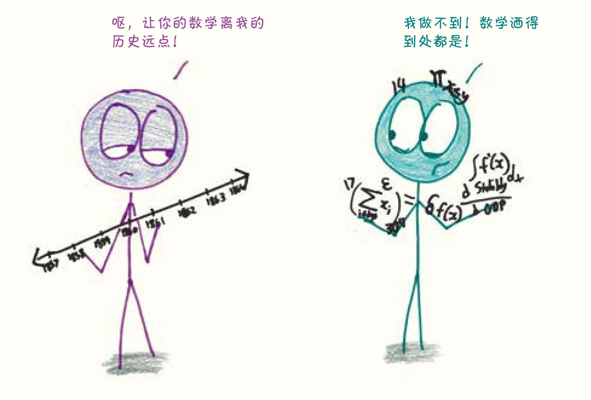
1961年冬天，东海岸几乎同时发生了两桩意外。
第一件事发生在华盛顿特区，就在肯尼迪总统就职典礼的前夕，足足降了20厘米厚的大雪。1成千上万焦急的南方司机大概认为这场雪是世界末日的信号，他们将汽车遗弃在了路上。灾难性的交通拥堵接踵而至。美国陆军工程兵团用了数百辆自卸卡车和火焰喷射器，才为就职游行扫清了道路。
总之就是一片混沌。
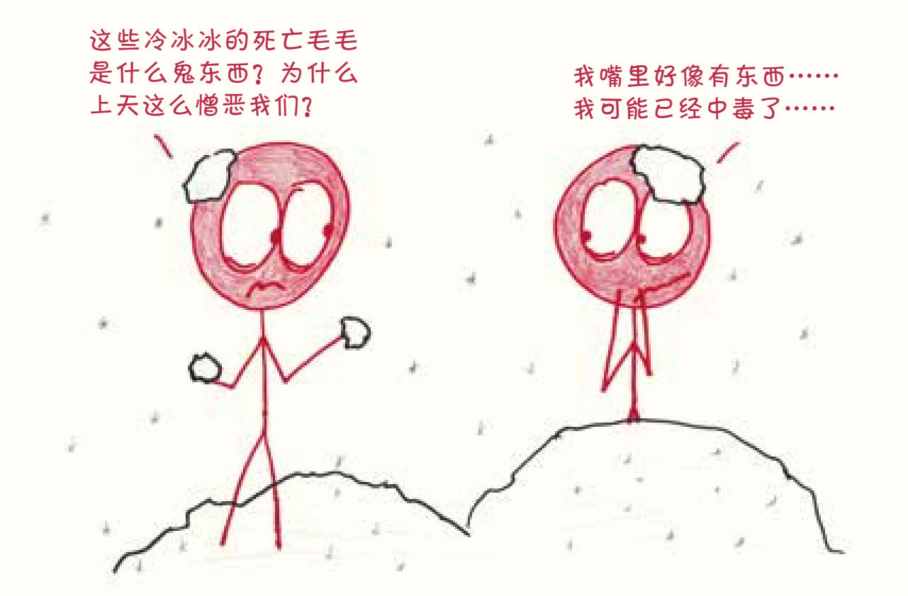
第二件事发生在肯尼迪的家乡马萨诸塞州，是一位叫爱德华·洛伦兹（Edward Lorenz）的研究人员的有趣发现。2从一年前开始，他就一直在开发一种天气计算机模型：输入初始条件，计算机通过一组方程开始运行，完成后打印出结果；再用这些结果作为第二天的初始条件，重复这个过程，就能从一个单一的起点算出几个月的天气情况。
一天，洛伦兹想要重现一个早期的天气序列。他的一个技术人员重新输入了初始条件，将它们进行了小小的四舍五入处理（例如，从0.506 127到0.506）。这微小的误差——比气象仪器所能探测到的误差还要小——理论上不会对结果造成什么影响。然而，在模拟天气的几周内，新序列就完全与原来的序列偏离了。一个小小的调整创造了一个全新的事件链。
总之就是一片混沌。
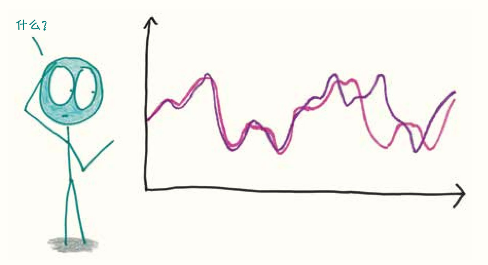
这一刻标志着一种新的实验风格的数学诞生，这是一次跨学科的离经叛道，被称为“混沌理论”（chaos theory）。这个领域的研究探索了各种具有奇怪特性的动态系统（酝酿中的风暴、湍流的流体、流动人口等）。这些系统倾向于遵循简单而严格的规律，具有确定性，没有偶然和随机的空间。然而，正是由于内部的各部分间微妙的相互依赖关系，它们才难以预测。这些系统可以把微小的变化放大成巨大的信号，把上游的涟漪放大成下游的巨浪。
洛伦兹和美国首都民众都对天气的不可预测性感到震惊，但这些事件之间的联系远不止于此。忘掉暴风雪带来的混乱吧，想想正在宣誓就职的约翰·F.肯尼迪。
三个月前，他在美国历史上最激烈的选举之一中击败了理查德·尼克松。由于赢得了伊利诺伊州（领先9 000票）和得克萨斯州（领先46 000票）的支持，他最终以0.17%的微弱优势在选举人团的投票中胜出。半个世纪过去了，历史学家们仍在争论当时的投票中是否存在舞弊行为。（结论：应该不存在。但谁知道呢？）不难想象，可能在某个平行宇宙中，尼克松以微弱优势获胜了。
但我们还是很难想象接下来会发生什么。
“猪湾事件”、古巴导弹危机、肯尼迪遇刺、约翰逊登上总统宝座、民权法案、“伟大社会”计划、越南战争、水门事件、比利·乔（Billy Joel）永不过时的畅销歌曲《我们没有点燃火焰》（We Didn't Start the Fire）等一系列和白宫的决策息息相关的事件。1960年11月0.2%的选票波动可能会改变世界历史的轨迹，就像四舍五入的误差导致了暴风雪。
自从注意到世界在改变，我就一直在思考如何将这些改变概念化。除非事情已经发生，否则文明的轨迹都不可知、不可预见，也不可想象。在这个系统中，一个单一的、细微的步骤就能产生巨大的、无限的后果，我们该如何理解这样的系统呢？
你对我说：“愚蠢的数学家，你就像在华盛顿的暴风雪中抛弃汽车的司机们一样大惊小怪，杞人忧天。”
我瞪大了眼睛盯着你，嘿，我和其他人一样渴望一个可以预知的世界。
你继续说道：“人类历史不是一片混沌，而是有规律可循的。无数的国家兴起又消亡；各种各样的政治体系出现又消失；歌手一夜成名，社交网络上的粉丝暴涨，但总有一天会过气的……一切的一切，以前都发生过，将来还会再发生。”
我挠头想了想，决定用钟摆的故事作为回应。
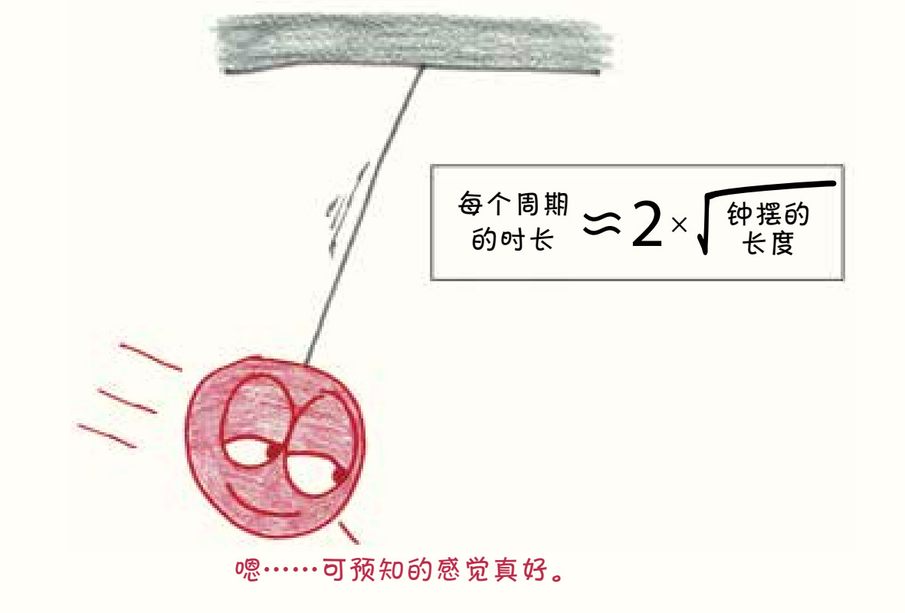
回到17世纪初，当科学第一次把目光投向钟摆时，他们发现了一种比当时任何时钟都可靠的机械装置。钟摆的运动遵循一个简单的等式——测量它的长度（单位：米），取平方根后再乘以2，就能得出每个周期的时长（单位：秒）。3这样，就把物理长度和时间长度关联了起来，统一了空间和时间，非常酷。
这种钟摆被数学家称为“周期摆”，周期的意思是“在一个固定的间隔后重复”，就像波浪的起伏和潮汐的涨落。
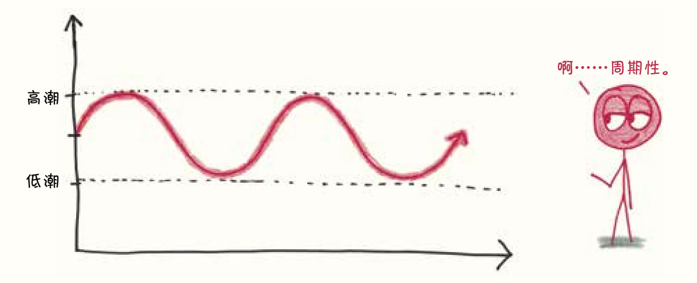
当然，钟摆也有缺点——摩擦力、空气阻力、磨损的绳子，但就像风无法撼动大山一样，这些微不足道的小插曲不会破坏它的可靠性。到了20世纪初，世界上最精密的摆钟一年时间的误差不超过一秒。这就是直到今天，钟摆仍然是有序宇宙的一个优秀精神象征的原因。
不过，现在出现了一个转折：双摆4。
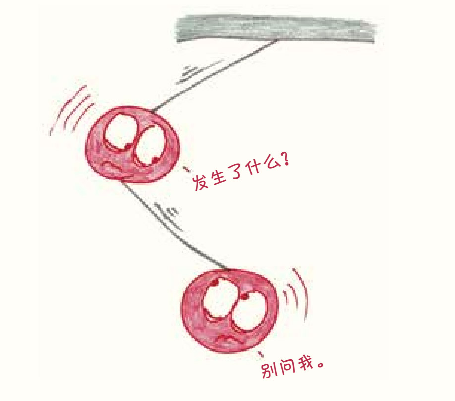
双摆就是一个摆连接到另一个摆上，同样受物理定律控制，同样可以由一组方程描述，所以它的表现应该和堂兄弟单摆一样，对吧？可是，看看这混乱又不稳定的摆动吧。它向左踢腿，向右摆手，像风车一样旋转，又停下来休息，然后以完全不同的动作重来一次。
这是怎么回事呢？它不是数学意义上的“随机”系统——没有骰子，也没有大转盘，而是一个受物理规则约束、受重力控制的系统。那么，为什么它的表现如此古怪呢？为什么我们不能预测它的运动呢？
简单地说，就是它太敏感了。
如果将双摆从一个位置释放，记录其运动轨迹；再把它从一个和刚才距离一毫米的位置释放，那么就会看到它沿着完全不同的路径移动。用技术术语来说，双摆“对初始条件很敏感”。就像天气一样，最初的一点儿小扰动在最后可能会引起戏剧性的变化。如果想做出可靠的预测，就要以接近无限的精度测量它的初始状态。
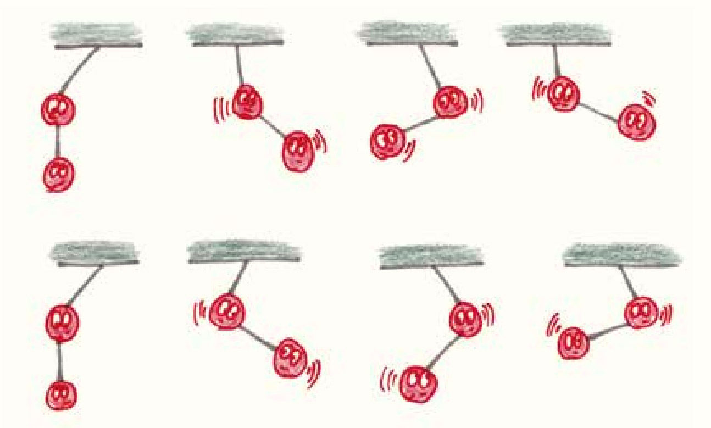
现在回到刚才的问题，历史是单摆还是双摆？
历史向左摆动，一个暴君亡国了；历史向右摆动，一场战争开始了。历史稍稍停顿了一下，在加州车库中酝酿的创业计划以其铺天盖地的符号化形象重塑了这个世界。人类文明是一个相互联系的系统，对变化非常敏感，既有短暂的稳定又有突然的疯狂，既有命中注定，也有不可预测。
在数学中，一个“非周期性”的系统可能会出现重复的现象，但没有一致性。很多人会告诉我们，不学习历史的人注定要重蹈覆辙，但情况可能比这更糟。也许，无论读了多少书，看了多少肯·伯恩斯（Ken Burns）的纪录片，我们都注定要重蹈覆辙；而且，我们还是会毫无防备，只有在事后才能意识到历史在重复。
“来吧，数学家，”你甜言蜜语地说，“人是没有那么复杂的。”
我皱起眉头。
你说：“我没有针对你的意思，但你的行为并不难预测。经济学家可以为你的财务选择建立模型，心理学家可以描述你的认知路径，社会学家可以描述你的身份感并对你选择的交友软件头像进行分析。当然，他们在物理和化学领域的科研同僚可能会对此不屑一顾，但社会科学家可以达到惊人的准确性。人类的行为是可知的，而历史又是人类行为的总和。这么来说，难道历史不是可知的吗？”
这个时候，我拿起一台电脑，向你展示生命游戏5。
就像许多趣事一样，生命的游戏中也包含一个棋盘。每个被称为“细胞”的正方形都可以假定为两种状态：“活着的”或“死了的”。公平地说，“游戏”这个词可能有些夸张了，因为生命是按照四个自动的、不变的规则一步一步展开的：
1. 如果一个死细胞有三个活邻居，它就会复活。
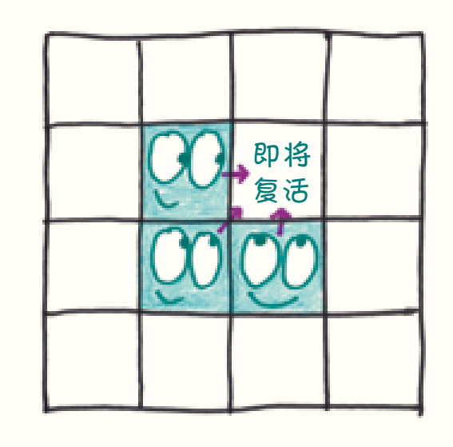
2. 否则，死细胞将进入死亡状态。
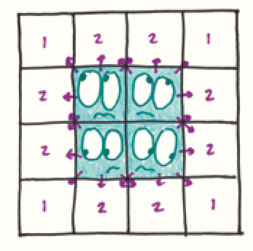
3. 如果一个活细胞有两个或三个活邻居，它就会存活下来。
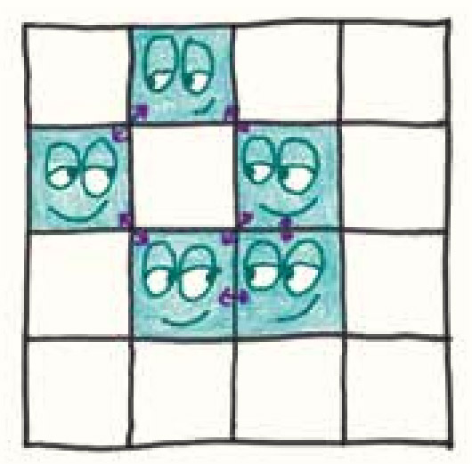
4. 否则，活细胞就会死亡（要么是因为孤独，要么是因为过度拥挤）。
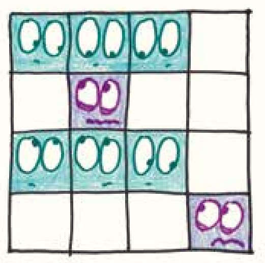
就这么简单。只需激活一些细胞，就能开始游戏。然后，根据这些规则，一步一步地观察棋盘的变化。这就像一个雪球，只要轻轻一碰就可以滚下山去，不需要进一步的付出。
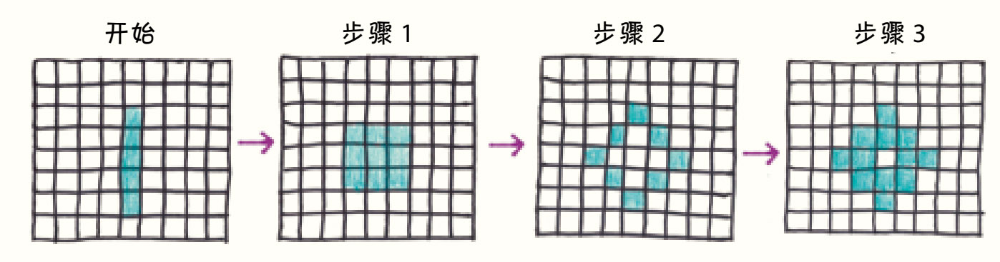
在这个世界上，获得心理学学位其实是很容易的。只要记住上面的四条规则，你就可以准确无误地预测每个细胞每时每刻的行为，成为一个很棒的心理医生。
然而，棋盘的长期未来仍不明朗。细胞们以微妙而难以预见的方式相互作用。如下图所示的模式可以让细胞无穷无尽地增长，而只要从原始棋盘中删除一个活细胞，细胞的增长就会逐渐停止。
我想起了阿莫斯·特沃斯基在谈他为什么成为心理学家时说的话：
实际上，我们做出的重大选择是随机的。小的选择可能会更多地体现我们是怎样的人，我们进入哪个领域可能取决于我们碰巧遇到的高中老师，我们和谁结婚可能取决于谁恰好在人生的正确时刻出现。另外，小的决定是非常系统的。我成为一名心理学家可能并不能说明什么，但我是什么样的心理学家可能反映了我的深层性格。6
在特沃斯基来看，小的选择遵循可预测的原因，但大规模事件是一个极其复杂、相互关联的系统的产物，在这个系统中，每一个动作都和周围的环境息息相关。
我认为，人类历史也是如此。一个人的行为是可预测的，但整个人类并不是。人与人之间微妙的关系放大了一些行为，而没有任何明确的理由就消灭了其他行为。
生命的游戏和洛伦兹的天气模拟一样，都来自计算机时代，这并非偶然。从本质上讲，混沌不是那种可以在思想中控制的东西，我们的大脑太倾向于把事情理顺，太倾向于把事实四舍五入到一个方便处理的小数上。因此，我们需要比我们的大脑更大、更快的大脑来处理这一片混沌。
“好吧，数学家，”你叹了口气，“我明白你的意思，不就是‘架空历史’嘛。想想看文明是如何发展的？真的存在极其微小但改变了整个历史的变化吗？”
我耸耸肩，不置可否。
你说：“你得这么说，诚然，历史的道路有时会分岔——有很多决定性的战争、关键的选举等，但是，这些并没有使历史变得混沌，只是增加了它的偶然性。历史仍然受制于逻辑和因果关系，不应该因此认为历史分析会注定失败。”
历史的转折点，1965——1970
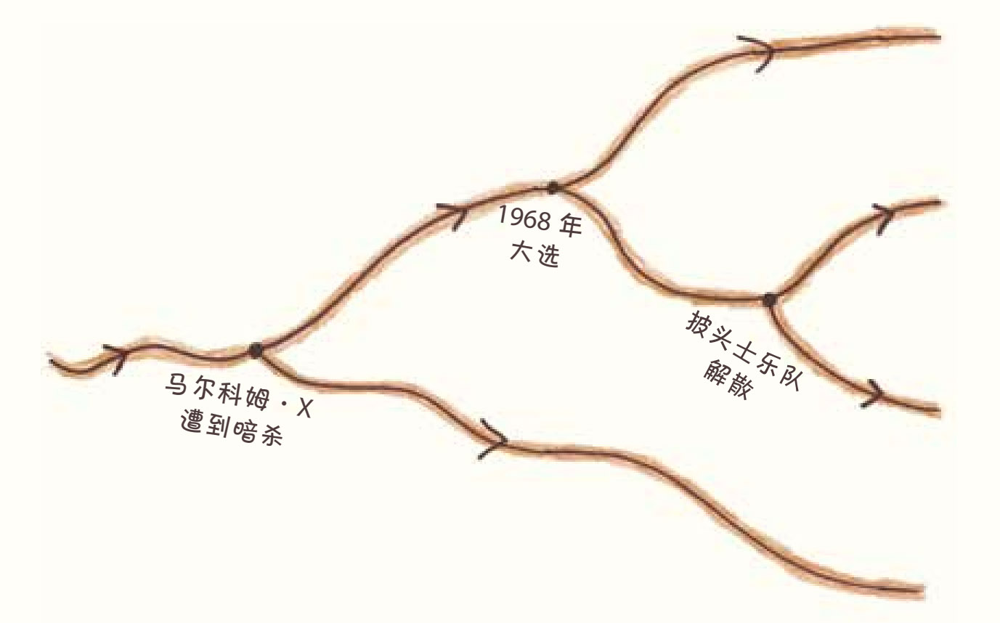
现在轮到我叹气了。你说错了，问题比你想象的更严重。
就从一颗炸弹开始说吧，或者更确切地说，两颗炸弹。1945年，美国向日本的两个城市分别投放了一枚原子弹：广岛（8月6日）和长崎（8月9日）。而在架空历史中，这个时刻变得完全不同——在金·斯坦利·罗宾逊（Kim Stanley Robinson）的中篇小说《幸运的一击》（The Lucky Strike）7中，艾诺拉·盖号轰炸机没有向广岛投下原子弹，而是在前一天的意外事故中被摧毁，这改变了核时代的进程。
然而，还是那个问题，罗宾逊只能在数万亿种可能中选择一个故事进行讲述。如果美国没有在7月底把日本的历史名城京都从轰炸目标名单中剔除，情况会怎样？8如果小仓市在8月9日的天气是晴朗而不是阴雨绵绵，原本要投放到该市的核弹没有改道到长崎，情况会怎样？如果当时的美国总统哈里·杜鲁门在原子弹爆炸前就意识到广岛是普通居民聚集的城市，而不是严格意义上的军事城市（不知为何他坚信如此），又会怎么样呢？9历史的可能性比任何故事都多。或然历史带来了一大堆不同的分支，而混沌理论告诉我们，这些分支已经被从蔓生的灌木丛中修剪掉了。
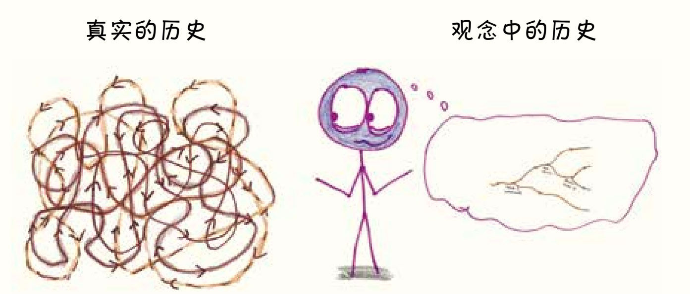
就算是最好的架空历史小说，也永远无法反映混沌的真实本质。当每一个时刻都潜伏着关键的转折点时，就不可能有线性发展的故事了。再来看看另一个或然历史中备受讨论的问题：如果蓄奴联盟赢得了美国内战，现在的世界会是怎样的？这是一个常见的推理话题，就连非科幻小说界的英国首相温斯顿·丘吉尔也加入了讨论。10因此，当HBO电视台宣布计划推出一部基于这个假设背景的电视剧《南部联盟》（Confederate）时，非裔美籍历史推理小说作家塔那西斯·科茨（Ta-Nehisi Coates）说了一番意味深长的话：
《南部联盟》是一个极其没有原创性的想法，特别是对所谓的前卫HBO而言。“如果当时获胜的是南方”可能是美国或然历史领域中最受欢迎的方向……但还有很多或然历史的话题没有讨论过，比如说：如果约翰·布朗（John Brown）当时成功了，会怎么样呢？如果海地革命已经蔓延到美洲的其他地方了，会怎么样呢？如果黑人士兵在内战开始时就应征入伍，会怎么样呢？如果印第安人当年在密西西比河上阻止了白人的进攻，会怎么样呢？11
或然历史往往停留在传统历史的“伟人”和“重要战役”上，而忽略了与主流文化相悖的其他可能性。可信性 （我们认为令人信服）的规则并不总是反映概率 （实际上可能发生）的规则。12
真正的混乱是一种破坏叙事的思想，一种像炸弹一样的、无政府主义的思想。
“好吧，数学家，”你努力维持着耐心，“你是说人类对历史理解是一种假象，历史的潮流是没有周期的海市蜃楼，我们试图推断其中的因果关系是注定要失败的。因为在像人类文明这样具有超级关联性的系统中，所有微观变化都会引发宏观影响，我们永远无法预测接下来会发生什么。”
“嗯，没错，不过我感觉自己听起来像个浑蛋。”我说。
你瞪着我。好吧，我接受。
也许人类历史正如混沌理论家所言，是一个“近非传递”（almost-intransitive）的系统。在很长一段时间内，它看起来相当稳定，然后突然发生变化。后殖民主义替代了殖民主义，自由民主替代了君权神授，企业经营的无政府资本主义制度替代了自由民主制。即使历史学家不能告诉我们下一个转折点之后会发生什么，他们至少可以描述出之前发生的变化，并阐明现阶段人类的状况。13
混沌理论使我们变得谦虚，它一次又一次地告诉我们，我们的所知是有限的。
1967年，混沌数学家贝努瓦·曼德尔布罗特（Benoit Mandelbrot）发表了一篇题为《英国海岸线有多长》的爆炸性短文14。这个问题比你想象的要难许多，因为英国海岸线的长度实际上取决于测量的方法，尽管这听起来很奇怪。
我们先用10千米的尺子测量地图上的海岸线，会得到一个长度。
然后放大地图，切换为1千米的尺子，之前看起来笔直的线条现在却变成了锯齿状。有了这把短尺，你可以测量出这些曲曲折折的线，得到一个更长的长度。
还没结束。再换成100米的尺子，重复以上过程。现在，那些长尺忽略的曲线和褶皱变得明显，总长度又增加了。
我们可以继续重复这个过程。你看得越近，用的尺越短，海岸线就会变得越长——理论上，这个变化不会停止。
这好像有点儿奇怪，对于大多数问题来说，仔细观察有助于弄清楚答案。而在这里却完全颠倒了，仔细观察不能简化也不能解决问题，只会让问题越来越多。
这种趋势在科赫雪花（Koch snowflake）上发挥得淋漓尽致。科赫雪花是一种由一个个凸起组成的数学物体，虽然它只占页面的一小块，但理论上它的周长却有无限大。
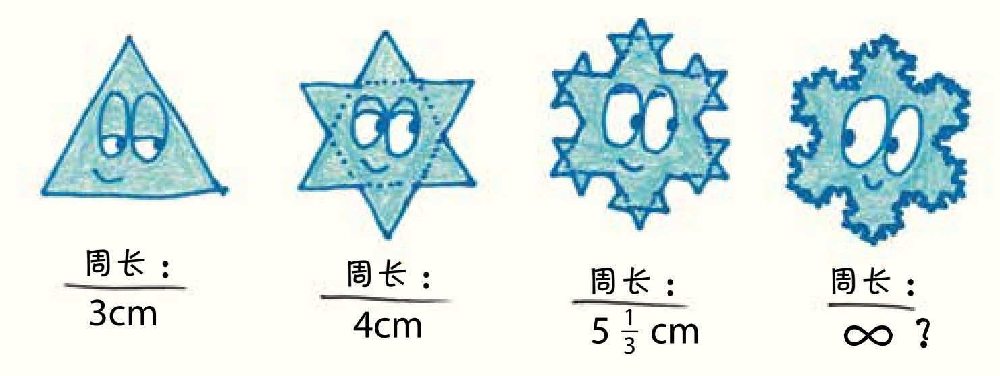
《来自地狱》（From Hell）是一部与思辨的历史有关的图像小说，讲述了1888年发生在伦敦东部白教堂区的一系列谋杀案。作者艾伦·摩尔（Alan Moore）将历史学术本质比作科赫雪花，他在后记中说：“每一本新书都为历史的主题提供了更新鲜、更精细的边缘细节。然而，它的面积并不会超过最初的圆圈——1888年秋天，白教堂。”15
在摩尔的叙述中，历史的研究是没有止境的。16我们越放大，看到的就越多。有限的时间和空间可以包含无限层次的细节，存在无穷无尽的关系链。混沌具有永恒的复杂性——不可模糊，不可解决，永无止境。
历史的混沌是像“生命游戏”那样的吗——在小范围内简单，而在大范围内不可预测？还是说，它的不可预测性更像天气——每天都有小幅的剧烈波动，但从长期来看，气候是稳定的？还是像科赫雪花——每一层都混沌，每一层都非常复杂？这些比喻在我的脑海中相互竞争，就像投射到同一个屏幕的三个PPT一样17。有时，我觉得自己正处在解决问题的边缘，但当我查看新闻时，世界又发生了变化，变成了另一种奇怪而又未知的形状。